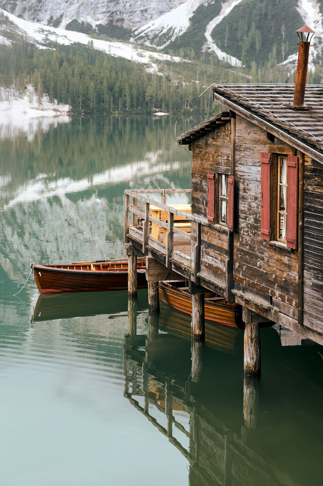

News
Notes from the road: timing, places, and small details that make a trip feel considered.

Why Lake Braies rewards the early start
April 03, 2026by: Travlr Editors
The lake is most generous before the day has fully arrived. The water holds the mountains cleanly, the boats are still tied close to the dock, and the path around the shore feels less like a route and more like a private hour.
We plan Braies around that quiet window. It usually means an earlier breakfast, a shorter list, and a room close enough that the morning does not begin with logistics. The reward is simple: fewer decisions, softer light, and space to notice the color of the water before everyone else starts naming it.
By midday, the lake belongs to more people. That can still be beautiful, but it changes the shape of the trip. Our favorite days use the early hours for the view, the middle of the day for an easy meal, and the evening for a room that makes staying in feel like part of the itinerary.